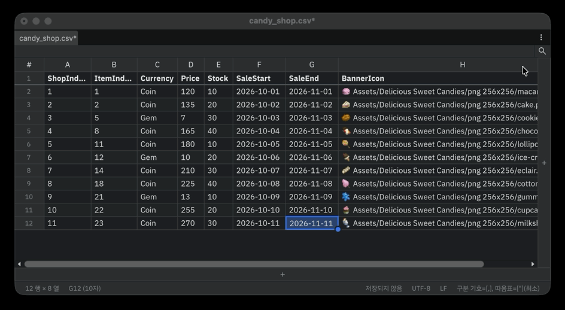

찾기와 바꾸기
툴바의 검색 아이콘이나 Ctrl+F로 찾기·바꾸기 바를 엽니다. 일치하는 셀은 표에서 강조됩니다.

찾기

입력칸 오른쪽의 토글로 찾는 방식을 정합니다.
| 토글 | 기능 |
|---|---|
| 대소문자 구분 | Cat과 cat을 구분합니다. |
| 정규식 사용 | 검색어를 정규식으로 해석합니다. 잘못된 식이면 잘못된 정규식이 표시됩니다. |
| 단어 단위로 | 단어 전체가 일치하는 경우만 찾습니다. |
입력칸 옆의 버튼은 다음과 같습니다.
- 다음 / 이전 결과: Enter / Shift+Enter 또는 F3 / Shift+F3과 같습니다. 결과 위치는
3/12처럼 표시됩니다. - 선택 영역에서 찾기: 지금 선택한 범위 안에서만 찾습니다.
- 수직 방향으로 찾기: 왼쪽 열부터 위에서 아래로 훑습니다. 끄면 행 단위로 왼쪽에서 오른쪽으로 훑습니다.
- 닫기: Esc와 같습니다.
바꾸기
입력칸 왼쪽의 펼치기 버튼(바꾸기 열기/닫기)을 누르면 바꾸기 줄이 나타납니다.

- 바꾸기(Enter): 지금 선택된 결과 하나를 바꾸고 다음 결과로 넘어갑니다. 선택된 결과가 없으면 먼저 첫 결과로 이동만 합니다.
- 모두 바꾸기(Ctrl+Enter, macOS는 Cmd+Enter): 모든 결과를 한 번에 바꿉니다. 바꾼 셀 수가 표시되며 Undo 한 번으로 되돌아갑니다.
- 대소문자 유지(AB): 바꿀 글자의 대소문자 모양을 원래 글자에 맞춥니다.
정규식을 켜면 바꿀 글자에서 $1 같은 그룹 참조를 쓸 수 있습니다.